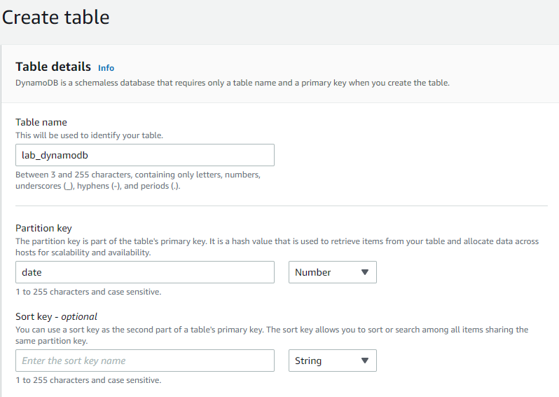
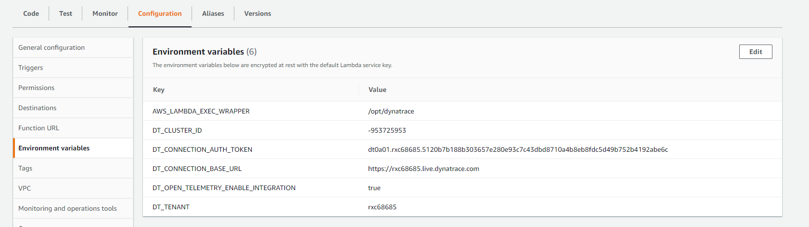
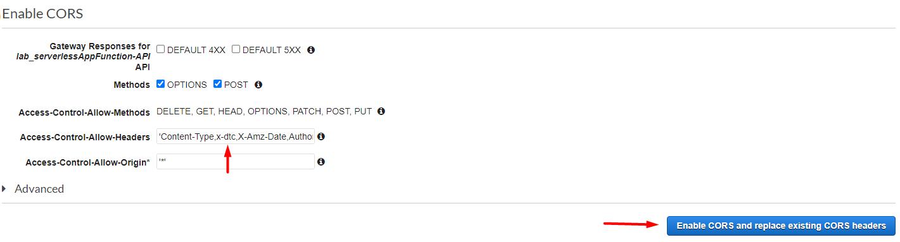
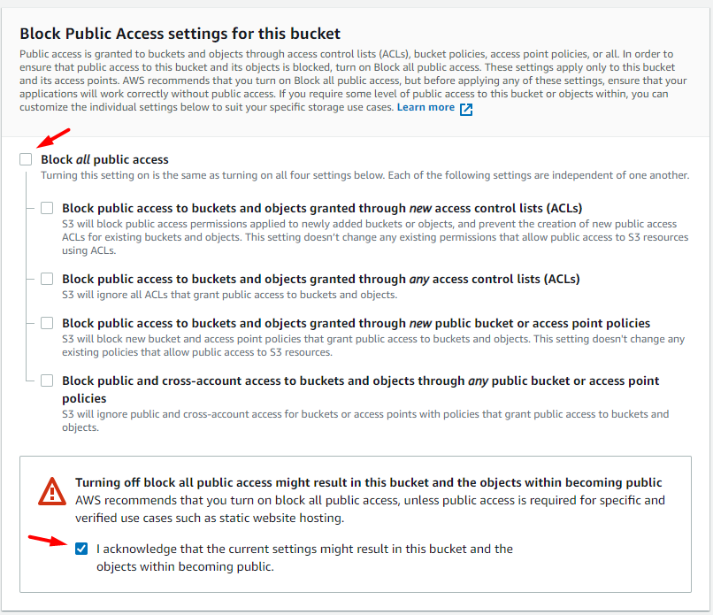
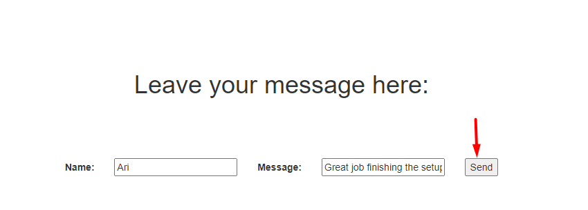

What You'll Learn Today
Today, we will deploy a sample app flow which has a React Frontend hosted on a S3 bucket calling a Lambda function via API Gateway. This Lambda function calls DynamoDB for its backend and we will able setup Dynatrace on all of these components to get a true end to end flow including RUM.
The sample app will have a simple form on the frontend where a user will be able to send a message and this message will then be saved in the DynamoDB table.
High level architecture diagram of our setup:
- Have Admin Access to Dynatrace SaaS Tenant
- Have access to AWS Console with permissions to create S3 Buckets, API Gateways, Lambda Functions and DynamoDB Tables.
- Permissions must include IAM permissions to create users, roles and policies.
- NOTE: The SE AWS Account does not provide us permissions to create users in IAM (which we require for one of the setups) so would recommend using a combination of the SE Account and a personal account for this lab.
- Have Amazon CLI locally installed -> https://aws.amazon.com/cli/
Technologies We Will Work With Today
- Dynatrace SaaS Tenant
- AWS Console
- AWS CLI
- Dynatrace Agentless RUM
- Dynatrace OneAgent Lambda Extension
We're going to work our way from back to front starting with the setup for DynamoDB and ending with the React Frontend in S3
- In the AWS Management Console, click on the search bar and type DynamoDB

- Click on the button to create a table
- Populate the table name and set ‘date' as a primary key (‘Number' as the type). Leave everything else with default options and then choose ‘Create' in the bottom right 
- Validate that the table is created successfully
Next we'll Configure the lambda fuction
- In the AWS Management Console, search for Lambda
- Click on the ‘Create function' button to get started
- We are going to create a function using the ‘Author from scratch' option, without any preconfigured templates. Populate the table with the following information and then press ‘Create function'
- We are selecting Node.js 14 as our runtime instead of the default Node.js 16 because 16 isn't supported by Dynatrace at the time of writing (support is being actively developed)
- Copy the sample code below to your function
Please note:```javascript const AWS = require('aws-sdk'); const docClient = new AWS.DynamoDB.DocumentClient({region: "us-east-1"}); exports.handler = (event, context, callback) => { console.log("Processing..."); console.log("EVENT: \n" + JSON.stringify(event, null, 2)); console.log("KEY VALUE: "+ event.body.key1); const params = { Item: { date: Date.now(), message: event.body.key1 }, TableName: "lab_dynamodb" }; const response = { statusCode: 200, headers: { 'Access-Control-Allow-Origin': '*', 'Access-Control-Allow-Credentials': true, }, body: JSON.stringify('Hello from new Lambda!'), }; docClient.put(params, function(err, data) { if(err){ callback(err, null); } else { callback(null, data); } }) }; ```- Remember to put the region corresponding to your case in line 2
- Lines 8-9 indicate that DynamoDB will receive an object from the Lambda function containing a date and a message in the ‘object.body.key1' property
- Line 11 must indicate the name of the table you create in DynamoDB. In my case, it was ‘lab_dynamodb'
- Deploy your code changes
- Our Lambda function does not have the permission to connect to the DynamoDB instance yet. Let's address that by navigating to ‘IAM'

- Select ‘Roles' from the left hand menu and look for the role name with your Lambda function name
- Click on ‘Add permissions' and then select ‘Create inline policy'
- We are going to allow the function all actions in relation to the given table in DynamoDB. After you do this, click ‘Review policy' in the bottom right, create a name and save your changes
Now that the initial setup of the Lambda function is done, we can install the Dynatrace OneAgent extension to it.
- Navigate to Deploy Dynatrace in your SaaS tenant, click on Start installation and then select ‘AWS Lambda'
- Ensure that the displayed region and runtimes are correct. Then copy the listed values for environment variables as well as the snippet for the Lambda layer ARN
- Add the provided values to the environment variables in the Lambda function 
- Click on Layers in the Function overview to add the layer

- Select the option for ‘Specify an ARN' and paste the value from the Dynatrace UI. Click on ‘Verify' and then ‘Add'
- Select Actions and then ‘Publish new version'
- Generate some traffic but running a few tests from the AWS Console and validate that you see the Service showing up in the Dynatrace UI
Next, we need to add a API Gateway Trigger to our AWS Lambda Function.
- Do this by clicking on ‘Add trigger' in the Function overview
- Select API Gateway from the dropdown, fill the fields with the following inputs and hit ‘Add'
- You will see the API Gateway show up in the Function overview
- Now, navigate to the API Gateway dashboard by clicking on the link below the Function overview
- As the user of the frontend app will be sending data, we need to create a POST method. Hence, click ‘Actions', select ‘Create Method' and then in the dropdown, choose ‘POST'
- Configure the method as follows. Make sure to select ‘Save' once you finish
- In order to stitch transactions end to end (from real user action to Lambda invocation), we need to pass headers (key header being x-dtc) generated by RUM instrumentation all the way through to the Lambda function. To do this, we need to adjust the settings on the API Gateway to pass the headers through. We will do this via mapping templates. More information available at our Dynatrace support documentation.
- To add a mapping template, select the POST method and click on ‘Integration Request'
- Expand on Mapping Templates to add the template
- This is the sample provided by the Dynatrace documentation
- It is important to note that this mapping replaces the entire payload which is being sent to our Lambda function, which means we must ensure this mapping also carries forward any required attributes which are needed for the Lambda processing. In our case, this means we need to carry forward the end user input from the frontend React application by ensuring we include the $input in our mapping template such that it was included in the payload sent to Lambda. Note the addition in the Mapping Template the example:
"body": $input.json('$'), - This is needed to be able to carry through our user input which could then be processed by the Lambda function. Be sure to save the template afterwards.
- We also need to enable CORS on the API Gateway (The React application will utilize CORS and Dynatrace will use the x-dtc header for tracing XHR calls) To enable CORS, click on Actions, select ‘Enable CORS', make sure to add the x-dtc header to the allow-list and select the Enable button: 
- Deploy the API (you can select the ‘default' Deployment stage)
Our API Gateway -> Lambda -> DynamoDB set up is now complete. We will next focus on the frontend
NOTE: You will need to execute this particular setup in a personal AWS account because the SE Account does not provide us permissions to create a user in IAM which is something we require.
- In the AWS Management Console, search for ‘S3'
- Select the ‘Create bucket' button to create a new S3 bucket
- Provide a name, region, disable blocking of public access and then create bucket (Leave everything else as default) 
- Next, we need to set up a user that can access the S3 service from the AWS CLI which is where we will be running the commands to deploy our frontend application. Go to IAM, and select ‘Users' from the left hand menu and then click on ‘Add users'
- Enter a name of your choice and select the box for Programmatic access. Click on ‘Next: Permissions'

- We will now assign this user full access to S3. Select the ‘Attach existing policies directly' option and select ‘AmazonS3FullAccess' from the list
- Leave all other settings as default and create the IAM user. Make sure to copy the Access key ID and Secret access key displayed at the end. We will need this for the CLI
- Now that we have a user created, we're going to access the S3 service from the CLI and deploy our frontend. Download or clone the repo from this location
- For simplicity's sake, you can locally download the zip file for the repo and unzip it.
- Run the following command on your CLI to set up AWS Credentials
aws configure - Provide the Access Key ID and Secret Access key, leave the default region name and output format blank
- To make sure everything is set up properly, run this command which will output the list of buckets you have on S3
aws s3 ls - Go to the directory where you unzipped the repo and run this command to create the production build (you will need to install yarn if you already don't have it) -> yarn build
- go to the folder where the repo was unzipped, look for the package.json file and add to the kson: "deploy": "aws s3 sync build/ s3://lab-lambda-s3bucket" Also change the homepage to "."
- This command uses the AWS CLI to sync the build folder with the S3 bucket
- We'll set up our bucket to be a static web hosting platform. Go to the S3 dashboard and select your bucket. Under the ‘properties' tab, select ‘static web hosting' and check the ‘user this bucket to host a website' box. Then fill the index document as ‘index.html'
- Save your changes and make note of the endpoint of the form. This is the URL we will use to access the application from the browser.
- Next, we'll need to add a policy that allows access to the bucket and in turn the application (you might have noticed the URL in the previous step giving you a 403) Go the ‘permissions' tab of your bucket and click on ‘Edit' for the Bucket policy
- Add the policy below, make sure the Resource field matches your bucket name and save your changes
{ "Version": "2012-10-17", "Statement": [ { "Sid": "AllowPublicReadAccess", "Effect": "Allow", "Principal": "*", "Action": "s3:GetObject", "Resource": "arn:aws:s3:::lab-lambda-s3bucket/*" } ] } - Finally, we need to enable CORS headers since the React Application and API Gateway are on different domains.Under ‘permissions', click on ‘Edit' for CORS
- Use the following JSON which adds all the methods we need and save changes
[ { "AllowedHeaders": [ "*" ], "AllowedMethods": [ "GET", "HEAD", "POST" ], "AllowedOrigins": [ "*" ], "ExposeHeaders": [] } ] - Your final view should look something like this:
- Head back to the CLI and deploy the React application to S3 using the following command
yarn deploy - Go to the URL from the step where we set up static web hosting and make sure you can access the website
- We need to make one last change. Look for the ‘form.js' file in the ‘src' directory of the repo and change line 27 to the API Gateway we set up earlier
- Redeploy using yarn and validate that you can now see your form entries in the DynamoDB table 

We're almost done with the lab! Last thing we'll do is configure agentless RUM on the frontend to get that full end to end flow from S3 -> Lambda -> DynamoDB
- Create an Agentless application in Dynatrace
- Go to ‘Setup' in your created application's settings and grab the insertion method of choice. For this lab we'll use the Agentless JavaScript tag approach
- Add the JS tag to the ‘index.html' doc in the ‘public' folder of the repo
- Redeploy the app using yarn and validate that the JS tag is loaded via dev tools
- We need to make one last change on the Dynatrace side to enable CORS on the Application. Go to Settings -> Capturing -> Advanced setup and add the API Gateway endpoint to the Enable RUM for CORS section
- Generate traffic and ensure you get the end to end flow

- Enable Session Replay for the created application and see what sort of additional visibility you can get

- Create user action naming rules to make your XHR actions more descriptive
- The calls to DynamoDB will initially show up in the ‘requests to public networks' service. Create a Service just for DynamoDB by filtering on the requests and using the option to ‘Monitor as separate service'
- Set up the AWS Integration to get additional metrics
Congratulations! You have successfully set up a sample application from scratch and instrumented Dynatrace across every step to gain end to end visibility!
Once you are done with the lab, please be sure to delete your S3 bucket, API Gateways, Lambda function and DynamoDB